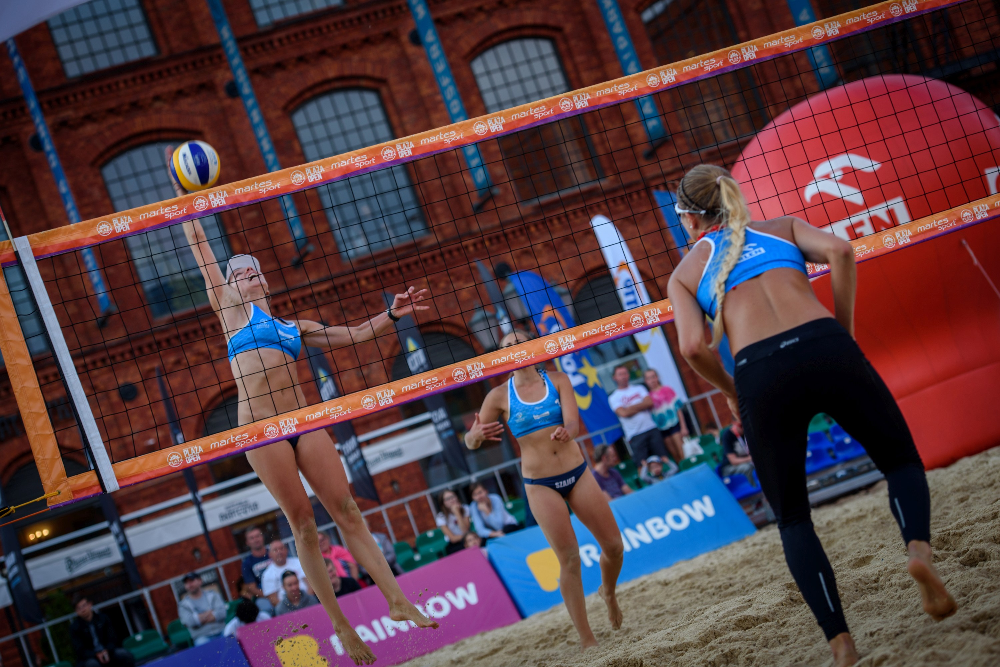
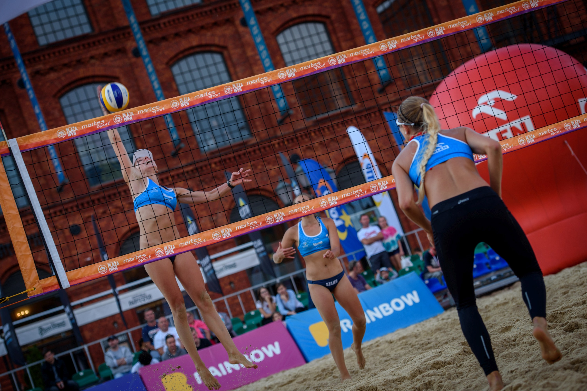

Oferta sponsorska na sezon 2020
Zachęcamy do bliższego przyjrzenia się naszej ofercie sponsorskiej. Została ona przygotowana w celu nawiązania potencjalnej współpracy. Na stronie znajdziecie Państwo informację o naszej drużynie, naszych planach nie tylko sportowych, ale również dalszego rozwoju, samej siatkówki plażowej w Polsce i tego w jaki sposób możecie nam Państwo pomóc, a co w zamian możemy zaoferować. Mamy nadzieję, że uda nam się znaleźć wspólny język i razem będziemy mogli realizować nasze cele i misje.
Kim jesteśmy?
Jesteśmy przyjaciółkami, które poznały się dzięki siatkówce. Jest ona naszą największą pasją, ale realizujemy się również w innych sportach. Jesteśmy charyzmatyczne i wiecznie uśmiechnięte, lubimy stawiać sobie wysoki cele i ambitnie do nich dążymy.
Łączy
nas nie tylko miłość do sportu, ale również do podróży i odkrywania nowego. Zwiedzanie nowych zakątków świata, pobudziło w nas ciekawość oraz respekt dla środowiska,
dlatego staramy się swoją postawą zachęcać do ekologicznego trybu życia, co sprawia nam
dużą radość. Rozwój jest dla nas znaczący, nie tylko siatkarski, ale również zawodowy. Staramy się zwiększać nasze umiejętności związane z programowaniem, tworzeniem stron, czy grafiką, czego pierwszym efektem jest ta strona.
Obie osobno na swoim koncie zanotowałyśmy wiele zwycięstw i nagród, nie tylko na boiskach plażowych.
Osiągnięcia
Marta Szajer-Widawska
Dominika Walusza
Siatkówka plażowa w Polsce
Siatkówka plażowa należy do jednych z najbardziej widowiskowych sportów. Turnieje rozgrywane są w
całej
Polsce, także w centrach większych miast, co przyciąga wielu kibiców.
Pragniemy skupić się na cyklu turniejów Plaży Open (cała Polska), Obłędna Plaża (Zbąszyń)
oraz
Plaża Gotyku (Toruń), które mogą zapewnić nam udział w wielkim Finale Mistrzostw Polski.
W sezonie 2020 przewiduje się łącznie ok. 20 turniejów w ramach eliminacji Mistrzostw Polski.
Oprócz tego chcemy również reprezentować naszą parę na śląskich turniejach, a nawet rozegrać turniej
Snow
Volley.
Fakty
Popularność siatkówki plażowej na przykładzie 10-lecia cyklu turniejów Plaża Open:
- 76 turniejów w ramach eliminacji Mistrzostw Polski
- 2037 drużyn zagrało łącznie w ramach eliminacji MP
- 42 spotkania z gwiazdami siatkówki (Glinka, Świderski, Gruszka, Fijałek, Gacek itd.)
- 23 ważne miasta współpracujące z Plaża Open (2012-2019)
- 4380 minut transmisji turniejów w TVP Sport
- 6,7 mln zł - wartość mediowa Plaża Open
- 140 000 zł - pula nagród Plaża Open w sezonie 2019
Źródło: www.plażaopen.pl
Rozegrane turnieje w sezonie 2018
Oferta
Sponsorzy-ich wiedza oraz pomoc finansowa i rzeczowa są nieodzownym wsparciem w rozgrywkach
seniorskich
siatkówki plażowej. Firmy, instytucje, przedsiębiorstwa coraz częściej i chętniej zaczynają korzystać
z
narzędzia, jakim jest marketing sportowy. Sport staje się bowiem kluczowym elementem budowania i
umacniania pozytywnego wizerunku firmy, a emocje związane z rywalizacją sportową wzmacniają efekty
działań marketingowych, podnosząc jednocześnie ich skuteczność.
Dostrzegamy i doceniamy dwustronne możliwości tkwiące w zaplanowanych działaniach z zakresu
sposnoringu
sportowego. Postaramy się, aby korzyści płynące z naszej współpracy rozkładały się równomiernie,
przynosząc jak najwięcej pozytywnych efektów dla każdej ze stron.
Podstawą naszych działań jest
partnerska i profesjonalna rozmowa - dzięki której jesteśmy w stanie precyzyjnie określić potrzeby i
wybrać
optymalne sposoby realizacji oczekiwań obydwu stron. Mamy nadzieję, że wspólnie będziemy w stanie
zrobić
coś dobrego dla sportu i rozwoju firmy.
Pakiety sponsorskie
15 000zł
- nazwa drużyny np. "nazwa firmy Szajer-Widawska/Walusza"
- logo firmy i nazwa drużyny na odzieży sportowej
- reklama firmy w mediach społecznościowych
- możliwość wykorzystania wizerunku dziewczyn w ramach kampanii reklamowej
- możliwość pojawienia się na imprezach firmowych w celu kreowania wizerunku firmy (poza dniem przedmeczowym i dniem rozgrywek)
- nazwa drużyny podawana we wszystkich formach reklamy (zapowiedzi meczowe, wywiady, skróty z zawodów)
5 000zł
- nazwa drużyny np. "nazwa firmy Szajer-Widawska/Walusza"
- logo firmy i nazwa drużyny na odzieży sportowej
- reklama firmy w mediach społecznościowych
2 000zł
- logo firmy i nazwa drużyny na odzieży sportowej
- reklama firmy w mediach społecznościowych

 

Wasza pomoc
Zdobyte fundusze pozwalą nam na opłacenie wpisowych turnieju, licencji sportowych, sprzętu sportowego, wyżywienia oraz noclegów podczas turniejów. Dzięki naszym wcześniejszym partnerom udało nam się rozegrać maksymalną ilość turniejów, co przyczyniło się do zebrania dużego doświadczenia, które zaprocentowało na sam koniec sezonu. W tym roku chcemy poprawić nasze poprzednie osiągnięcia, jednak same nie damy rady tego dokonać. Za wszystkimi wynikami sportowymi stoi Wasze wsparcie.
Kontakt
dominika.walusza@gmail.com
marta.szajer@gmail.com
+48 500 606 488
+48 502 690 736